A Real-World Bathroom Acoustic Event Dataset for Privacy-Preserving Assistive Living
¹Dept. of Computer Science & Engineering, NIT Durgapur ²Dept. of Electronics & Communication Engineering, NIT Durgapur
Acoustic sensing provides a privacy-preserving alternative to camera-based monitoring for ambient assisted living, yet publicly available datasets for bathroom acoustic event recognition remain scarce. To address this gap, we present SnaanGhar7, the first publicly available real-world bathroom acoustic event dataset for intelligent bathroom monitoring.
The dataset comprises seven classes — Flush, Shower, Bathroom Tap, Basin Tap, Door, Walker/Crutch, and an Unknown Class — collected across five real-world bathroom environments. After manual annotation and sliding-window segmentation, the dataset contains 21,387 near-balanced audio samples with an imbalance ratio of only 1.2×. We establish benchmark results using seven representative acoustic event classification models spanning both MFCC- and raw-waveform-based approaches, with the best-performing model achieving 99.64% classification accuracy. By publicly releasing the dataset together with standardized benchmark protocols and baseline implementations, SnaanGhar7 provides a reproducible benchmark for privacy-preserving bathroom acoustic event recognition, ambient assisted living, and TinyML research.
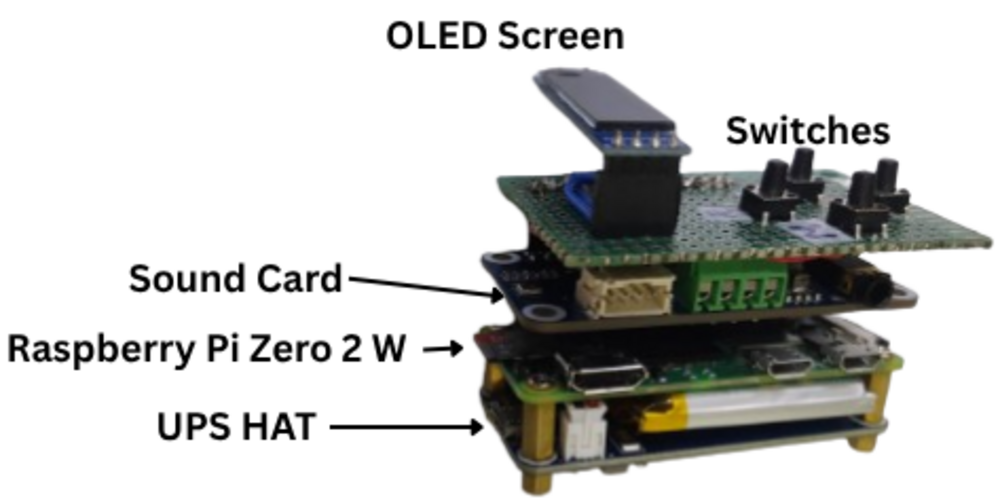
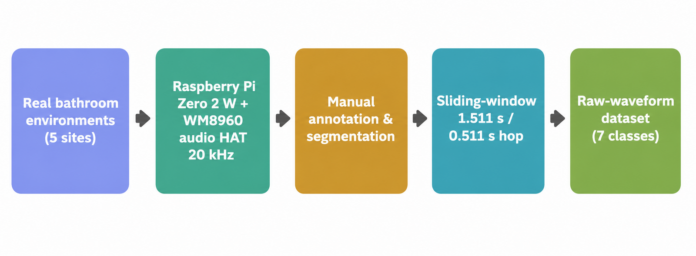
Six target classes cover routine bathroom activity and assistive-living events; an Unknown Class aggregates background and non-target sounds so a deployed classifier can reject out-of-distribution input.
Toilet flushing
Transient onset, then broadband water flow
Continuous shower water flow
Sustained broadband noise, stable energy
Bathroom tap running
Continuous flow, variable intensity
Basin tap running
Continuous, narrow / localized flow
Opening / closing / knocking / latch
Impulsive onset, short duration
Mobility-aid contact sound
Repeated transient impacts, separated by silence
Background, silence, non-target events
Low-energy or mixed background, high variability
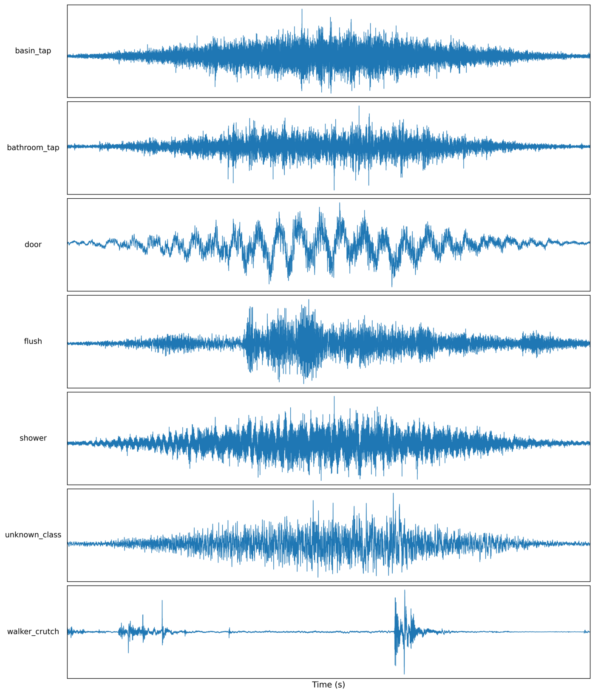
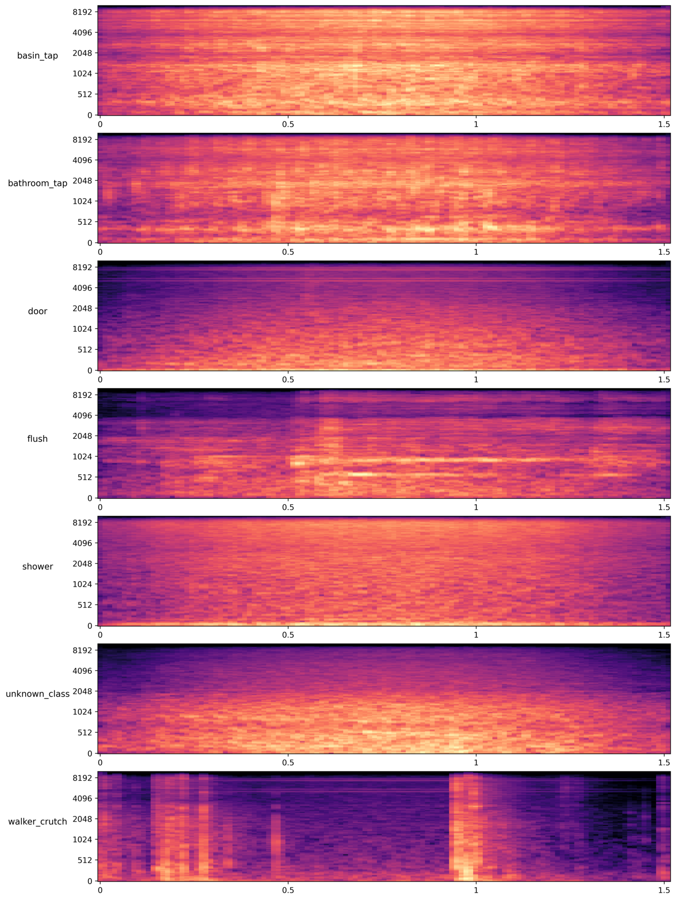
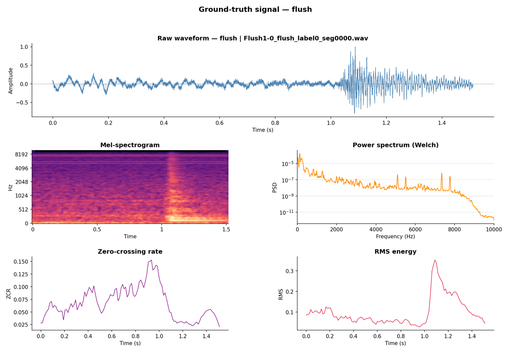
Recordings were captured with a fully embedded platform built around a Raspberry Pi Zero 2 W and a Waveshare WM8960 audio HAT, with an OLED status display, SD-card storage, a UPS HAT for untethered operation, and four control switches (start/stop recording, run inference, shut down, reserved). Capture, storage, and on-device inference all run offline — a deliberate reproducibility and privacy choice.
| Property | Value |
|---|---|
| Compute platform | Raspberry Pi Zero 2 W (512 MB RAM) |
| Audio front-end | Waveshare WM8960 audio HAT |
| Sampling rate | 20 kHz |
| Bit depth | 32-bit I2S |
| Channels | Mono |
| Automatic gain control | Disabled |
| Microphone placement | Dynamic (not fixed) |
| Same device across all sites | No |
| ID | Location | Type |
|---|---|---|
| E01 | NIT Durgapur (CSE / Annex 1) | Institutional |
| E02 | Residential home, Howrah | Residential |
| E03 | Hall-6, NIT Durgapur | Hostel |
| E04 | DS-1B, NIT Durgapur | Residential |
| E05 | Hall-9, NIT Durgapur | Hostel |
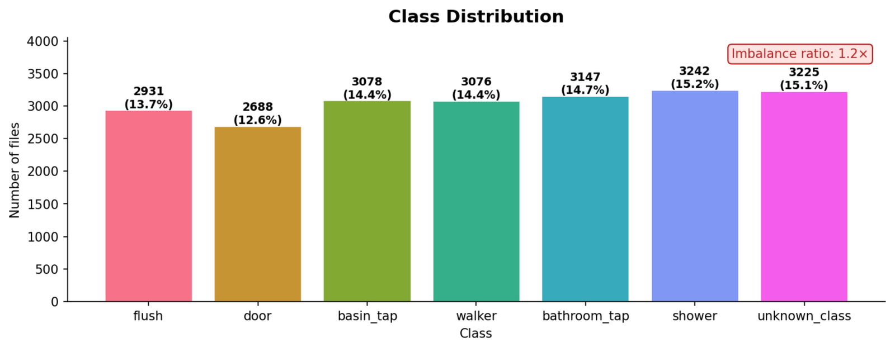
A composite difficulty score (aggregating inter-class overlap, intra-class spread, imbalance, silence content, and RMS variability) characterizes the corpus beyond raw counts. Flush is hardest (0.737) due to broadband overlap with other water events; Bathroom Tap (0.251) and Unknown Class (0.242) are easiest.
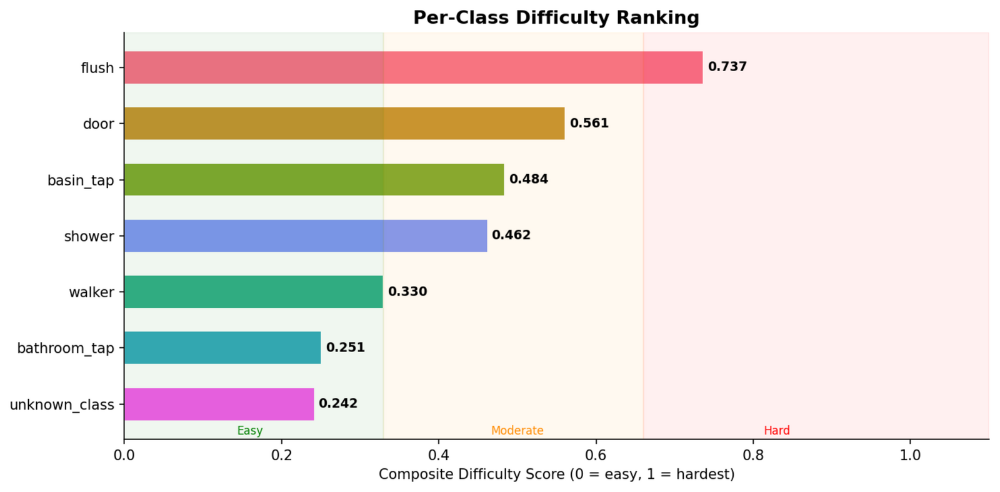
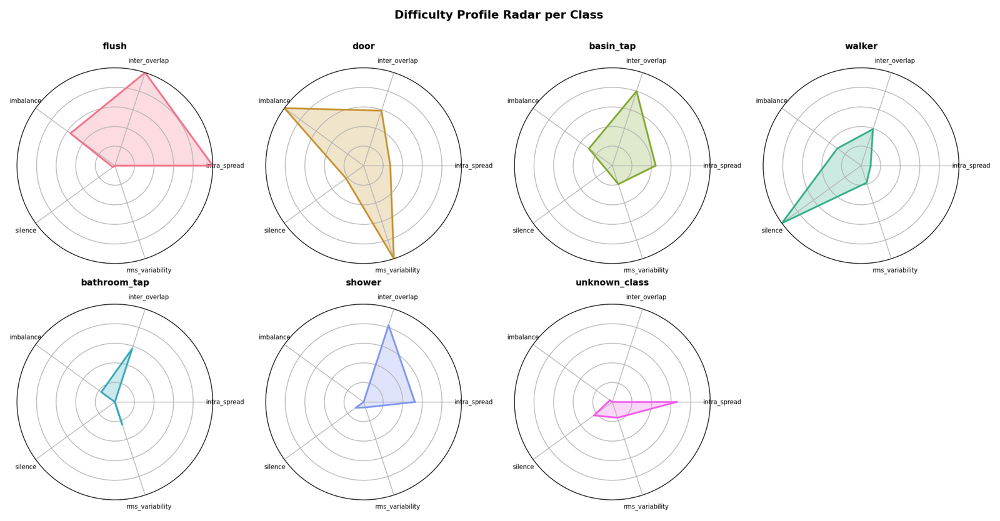
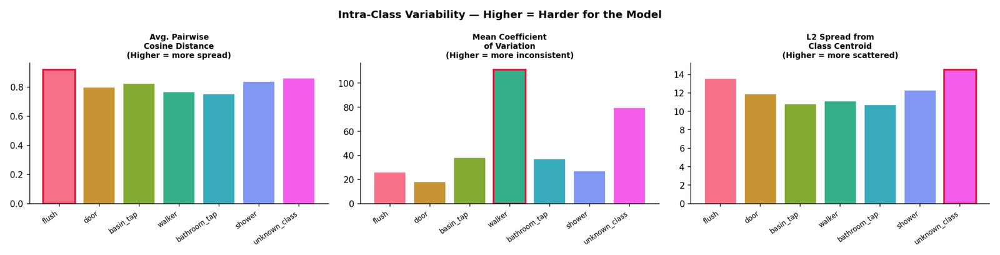
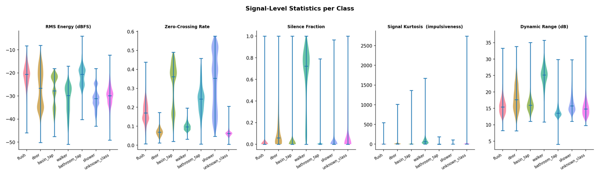
Seven representative acoustic event classification models were evaluated — three MFCC-based (DS-CNN, CRNN, TinyCNN) and four raw-waveform models (ACLNet, DPNet, ACDNet, SincNet) — trained with the Adam optimizer and categorical cross-entropy loss, with waveform-level amplitude augmentation (±25%). All models exceed 93% accuracy; six exceed 96%.
| Model | Input | Params | Accuracy (%) | Inference (ms, PC) |
|---|---|---|---|---|
| DS-CNN | MFCC | 81,863 | 97.59 | 39.52 |
| CRNN | MFCC | 128,519 | 98.80 | 39.13 |
| ACLNet | Raw | 146,240 | 96.82 | 61.12 |
| DPNet | Raw | 547,537 | 99.21 | 63.02 |
| TinyCNN | MFCC | 1,736,071 | 99.63 | 39.00 |
| ACDNet | Raw | 4,711,303 | 99.64 | 66.67 |
| SincNet | Raw | 14,149,895 | 93.76 | 52.00 |
ACDNet gives the best offline accuracy (99.64%); DPNet offers the best accuracy/complexity trade-off for resource-constrained edge deployment.
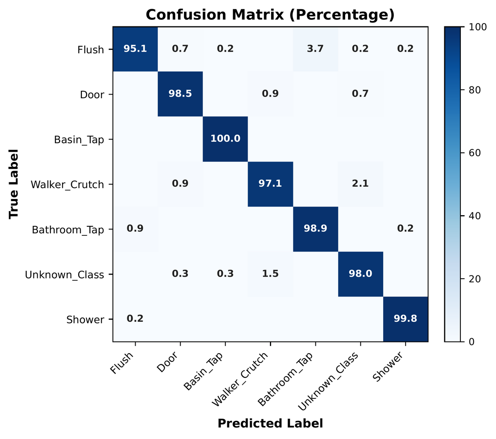
Trained models were converted to TensorFlow Lite and deployed on a Raspberry Pi Zero 2 W to evaluate real-time, resource-constrained performance.
| Data | Model | Acc. (%) | Size | Real-time Acc. (%) | TFLite (ms) | End-to-end (ms) |
|---|---|---|---|---|---|---|
| Original | ACDNet | 97.69 | 18.4 MB | 62.65 | 15.68 | 230.8 |
| Original | ACDNet + Prep. | 99.39 | 18.4 MB | 66.27 | 27.38 | 230.2 |
| Original | DPNet | 97.52 | 2.15 MB | 70.68 | 4.45 | 59.5 |
| +Augmented | ACDNet | 99.39 | 18.4 MB | 64.46 | 21.17 | 231.1 |
| +Augmented | ACDNet + Prep. | 99.64 | 18.4 MB | 80.99 | 27.61 | 230.0 |
| +Augmented | DPNet | 99.21 | 2.15 MB | 89.26 | 15.71 | 53.5 |
After quantization, DPNet occupies only ~2.15 MB and achieves 89.26% real-time accuracy with ~15.7 ms average inference latency, supporting both high-performance offline benchmarking and resource-constrained edge deployment.
| Repository | github.com/debolina-34/SnaanGhar7 |
| Project page | debolina-34.github.io/SnaanGhar7 |
| DOI | To be assigned upon publication |
| License | CC BY-NC 4.0 |
| Version | v1.0 |
| Contact | debolinarimuchowdhury@gmail.com |
SnaanGhar7 relies exclusively on passive acoustic sensing, not cameras, and supports only activity-level acoustic event classification — it is not designed or intended for speech recognition, speaker identification, user authentication, or personal attribute inference. All recordings were collected with informed participant consent and permission from the respective property owners. A small number of Unknown Class recordings contain incidental human speech captured under realistic conditions; these are treated solely as non-target events, and no personally identifiable information is included in the released dataset. The dataset is released exclusively for academic research in privacy-preserving acoustic sensing, ambient assisted living, healthcare monitoring, and TinyML.
SnaanGhar7 currently covers seven classes from five bathroom environments collected with a single recording platform, so it does not capture the full diversity of bathroom layouts, devices, or user behaviors encountered in practice. Only isolated events are annotated (no overlapping/simultaneous activity labels), and — while the benchmark is intentionally near-balanced for fair model comparison — real deployments are typically far more imbalanced. Future releases aim to expand recording environments, participants, devices, and event categories.
If you use SnaanGhar7 in your research, please cite:
@inproceedings{chowdhury2026snaanghar7,
title = {{SnaanGhar7}: A Real-World Bathroom Acoustic Event Dataset for
Privacy-Preserving Assistive Living},
author = {Chowdhury, Debolina and Samui, Suman and Saha, Sujoy},
year = {2026},
note = {Dataset paper. Version v1.0},
url = {https://github.com/debolina-34/SnaanGhar7}
}